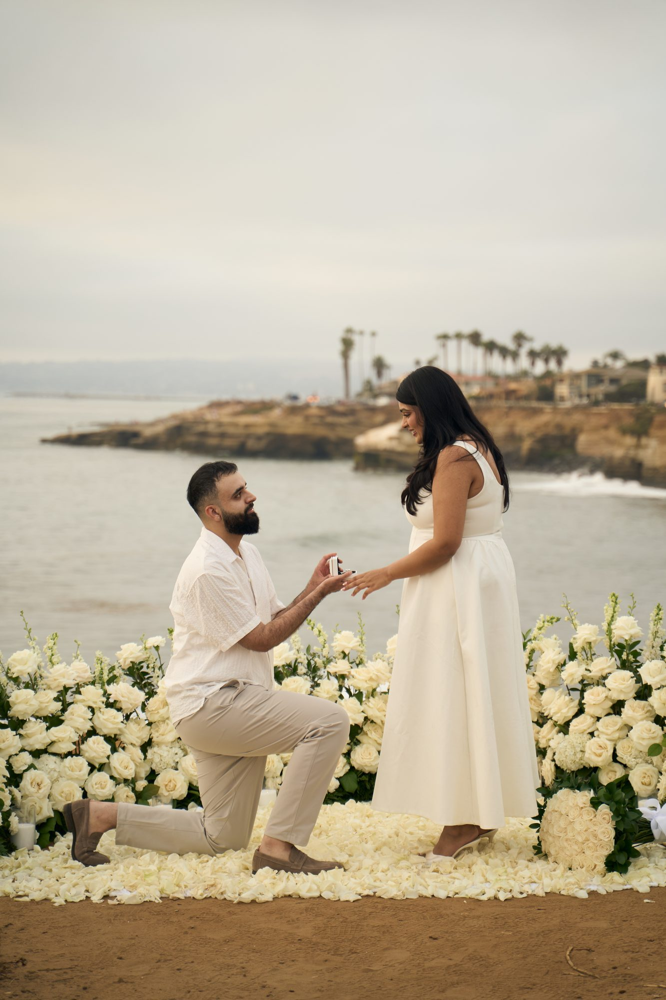
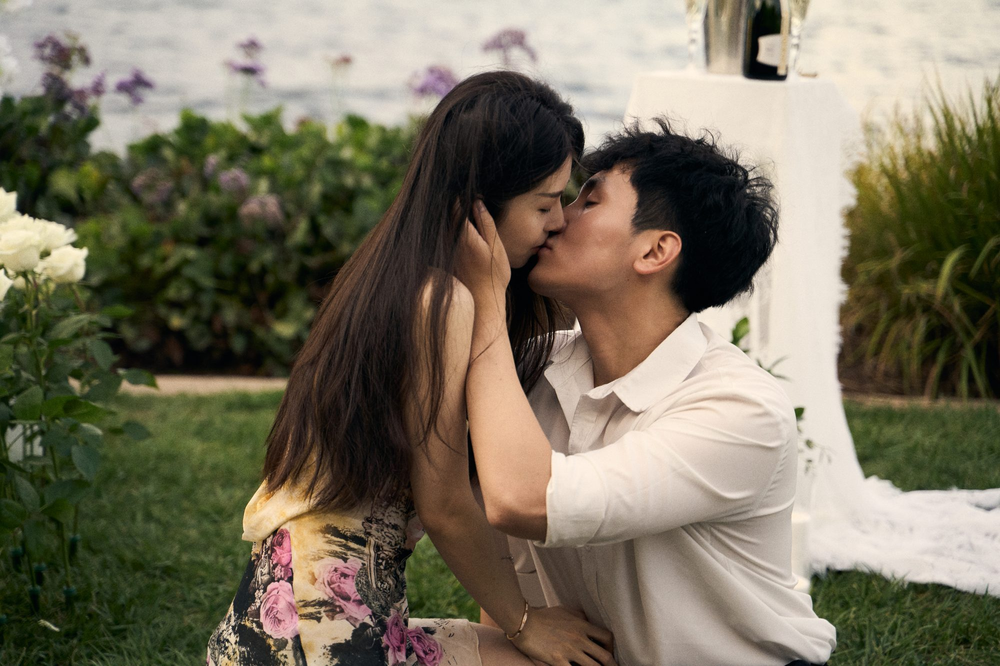

Twelve spots I keep coming back to as a proposal photographer: what the light does, how private each one is, where to park, how far the walk is, and which ones need a permit. Written for the person planning the ask.
I have watched a lot of people get down on one knee from behind a long lens, so I know which spots make the moment easy and which ones make it hard. Easy means good light at the hour you can actually get there, a short walk from the car so the partner does not get suspicious, a place for me to stand that looks like any other visitor, and no surprises from a park rule. Here are the twelve I recommend most, with the honest trade-offs.

The sandstone bluffs at the end of Point Loma, with the Pacific straight ahead and the sun going into the water. It is the most requested proposal spot in San Diego, and it earns that. The cliffs face due west, so the last hour before sunset turns everything gold, and the drop-off behind you gives photos a clean horizon with no buildings.
Best light: 60 to 90 minutes before sunset. The sun itself is the backdrop for the mini session after. Privacy: busy at the Ladera Street and Osprey Street overlooks on weekends, quieter on the stretches between them and on weekday evenings. There is always a bend in the path where I can stand without looking like a photographer. Parking and walk: street parking along Sunset Cliffs Boulevard and a few small lots. The walk from the car is two or three minutes on flat dirt paths, so no excuses are needed.
Permits: Sunset Cliffs is a City of San Diego park. A proposal with the two of you and a photographer needs nothing. The City's permitted ceremony sites here are Ladera, Luscomb's Point and Osprey, each with a 50-person cap and hours of 8 a.m. to 8 p.m., and a ceremony or any setup such as chairs or an arch goes through the Park and Recreation Permit Center, (619) 235-1169. No food, beverages or glass at the permitted sites. Styled picnic scenes need a permit; photography on its own does not.
A small grassy bowl a few steps below Coast Boulevard, across from the Museum of Contemporary Art, with the ocean filling the view below it. It is the best-looking small spot on the coast and it feels enclosed, which makes a proposal there feel private even with people walking the path above.
Best light: late afternoon into sunset. The bowl faces west, and the low sun comes across the water. Privacy: good. The lawn sits below street level so passers-by look over it rather than into it. Parking and walk: street parking only, which can take a few laps on weekends. The walk is under a minute once you park.
Permits: the City permits ceremonies here, not receptions, with a capacity of 50, hours of 8 a.m. to 8 p.m., and only one permit per day. A proposal for two with a photographer needs no permit. If you see a ceremony set up when you arrive, that couple holds the day, so we move fifty yards along the path to Scripps Park. No glass, no restrooms on site, and no dogs between 9 a.m. and 6 p.m.
The big lawn above the Cove, with the sea lions barking below and the sandstone curving north toward the Shores. The City's guide calls it the most photographed spot in San Diego, which is true, and that is the one thing against it: it is never empty.
Best light: the last hour of the day, when the lawn goes gold and the cliffs to the north light up. Privacy: low on the main lawn, better at the far north end by the cliff rail. The crowd actually helps a surprise, since one more person with a camera is invisible. Parking and walk: street parking on Coast Boulevard and Prospect Street, two to five minutes of flat walking.
Permits: a City ceremony site with capacity of 80 from September through May and 50 in summer, hours 8 a.m. to 8 p.m. Receptions are allowed here, which is rare for the coast. A proposal for two needs nothing.
South of the Cove, a rocky beach with a famous surf break and a palm-thatched hut that is a local landmark. The rocks give you levels to stand on and the surf gives the photos motion. It feels wilder than the Cove and draws fewer tourists.
Best light: sunset, with the sun going down behind the break. Privacy: good at the south end, moderate near the hut. Parking and walk: street parking on Neptune Place, a one-minute walk down a short path. The beach has steep shore break, so this is a stand-on-the-rocks spot, not a wade-in spot.
Permits: the City permits ceremonies here for up to 50 people, 8 a.m. to 8 p.m., and the hut itself cannot be reserved; it stays public. A proposal for two needs nothing.

The tallest bluffs on the county's coast, rare pines, and long views south to La Jolla. It is spectacular, and it is the one coastal spot where I steer people carefully, because the Reserve on top is state land with its own rules.
Best light: late afternoon on the bluff trails, sunset on the beach below. Privacy: very good on the beach at the north end, moderate on the trails. Parking and walk: the Reserve has a paid lot at the top and a lot at the beach; the trails are a real walk of 15 to 30 minutes.
Permits: Torrey Pines State Natural Reserve requires a special event permit for any activity beyond a regular visit, and the park's own information sheet lists weddings and photography among them. Requests go to the State Parks Special Event Office at sd.specialevents@parks.ca.gov, which is not on site, so this is not a spot for a short-notice plan. The workaround is the state beach below the Reserve at sunset, or the Torrey Pines Gliderport bluff just south of it, where the paragliders make the backdrop.
Wide, flat, white sand in front of the Hotel del Coronado, with Point Loma across the water and the hotel's red turrets behind you. It photographs like a postcard and the sand is so wide that a proposal can have fifty yards of space around it.
Best light: sunset, when the hotel glows and the sand turns pink. Privacy: good once you walk north of the hotel toward the dunes. Parking and walk: free street parking on Ocean Boulevard, then a short walk over the dune path. Allow time for the bridge.
Permits: Coronado is its own city. A wedding ceremony on the beach or in a park needs a City of Coronado park permit, you cannot rope off or reserve an area, and alcohol is prohibited in its parks and beaches. A quiet proposal is a walk on a public beach and needs nothing. Confirm current rules and fees with the City before planning any setup.
The one place on this list that works at noon. The Spanish arcades along El Prado give shade and shape, the Botanical Building and its lily pond are the most-photographed thirty yards in the park, and the gardens give you quiet corners. It also makes sense in winter, when the coast is windy.
Best light: early morning before the museums open, or late afternoon when the arcades go warm. Midday works under the arches. Privacy: moderate on El Prado, good in the Alcazar Garden and the rose garden on a weekday. Parking and walk: several free lots; the Alcazar lot puts you two minutes from the arcades.
Permits: ceremonies in the park go through the City Permit Center, which lists the Alcazar Garden and the Rose Garden at 50 people, the Zoro Garden at 75 and the Desert Garden at 20 standing, with a limit of 20 chairs in the gardens on the City's Balboa Park permit map. A proposal for two with a photographer needs nothing.
The top of La Jolla, with the whole county below you: the coast in one direction, downtown and the mountains in the other. On a clear evening you can watch the sun set over the ocean and then turn around and watch the city lights come on.
Best light: the half hour around sunset, then blue hour for the lights. Privacy: moderate. The memorial draws visitors, but the lawns on the slopes are quiet. Parking and walk: a lot at the top, a one-minute walk.
Permits: reserving the lawn beside the memorial goes through the La Jolla Recreation Center at (858) 552-1658, and the memorial itself and its steps through the Mt. Soledad Memorial Association at (858) 459-2314, according to the San Diego Tourism Authority's wedding resources. Standing on the lawn to propose needs nothing.
The tip of Point Loma, with the old lighthouse, the bay, downtown and Coronado all in one frame, and tide pools on the ocean side. It is the most dramatic view in the county. It is also federal land, so I recommend it only when there is time to plan.
Best light: late afternoon on the bayside overlooks. The monument closes before sunset most of the year, so check the hours. Privacy: low at the statue, better along the bayside trail. Parking and walk: a paid lot by the visitor center, with an entrance fee per vehicle, and a few minutes of walking.
Permits: the National Park Service does not require a photography permit for groups of eight or fewer in public areas using hand-carried equipment and no exclusive use of a spot. Beyond that, a still photography permit costs a non-refundable $100 application fee plus a location fee of $50 per day for 1 to 10 people, arranged through the park at (619) 523-4276. Drones are prohibited in national parks. For two of you and me with a camera we are inside the no-permit rule; add a setup or a crowd and it is paperwork.

Two man-made islands on the bay with the downtown skyline across the water, sailboats in front of it, and planes landing behind. They are the spots for the city-lights proposal, and the walking paths are long enough that you can keep strolling until the moment is right.
Best light: blue hour, the twenty minutes after sunset when the sky goes deep blue and the skyline lights up. Privacy: good. The paths are wide and people keep moving. Parking and walk: free lots along both islands, and the water is thirty seconds from the car.
Permits: both islands are Port of San Diego tidelands rather than City park sites, and neither appears on the City's permitted ceremony list. A proposal with the two of you needs nothing. Ask the Port before adding any setup.
A sloping lawn in Pacific Beach with Mission Bay, the ocean and downtown all below it. Locals bring picnics and dogs here, which means a couple sitting on a blanket looks completely normal, and the grass gives you the kneeling shot without rocks.
Best light: the hour before sunset, with the bay going silver below. Privacy: good. It is a big lawn and people spread out. Parking and walk: a free lot at the top and street parking, with the view thirty seconds away.
Permits: a City neighborhood park that is not on the permitted ceremony list. A proposal for two needs nothing. A picnic setup for a crowd is a Permit Center question.
The long lawns and fountains in front of the County Administration Center, with the bay on one side and the city on the other. It is the spot for a proposal that leads straight to dinner in Little Italy, and the big lawn means plenty of room between you and everyone else.
Best light: late afternoon, when the building's white facade bounces soft light back, and blue hour over the bay. Privacy: moderate. Families use the fountains, but the south lawns are quiet. Parking and walk: the underground garage beneath the park and street parking; the lawn is a minute from either.
Permits: this is a County of San Diego park, not a City one, so any setup or event goes through the County. Standing on the lawn to propose needs nothing.
Two stretches of the year are far busier than the rest for proposals in San Diego. The first runs from about December 12 to January 2, when families are in town and the ring has been bought for Christmas. The second runs from about January 30 to February 13, the lead-up to Valentine's Day. Both are also the season when sunset comes early, around 4:45 p.m. in December, so a proposal after work means a weekend or a long lunch. If your date falls in either window, text me the moment you decide. The quieter weeks right after New Year's are the easiest to book.
We plan everything over text or email, and nothing goes into a shared calendar. I will send a spot that fits the week's light, the exact place to stand marked on a map, and a time to be there. You tell your partner whatever gets them there: a sunset walk, a dinner reservation nearby, a friend who wants to meet. On the day, I arrive early and look like anyone else enjoying the view, with a long lens that does not need me close. When you are in position you give me a small signal we have agreed on in advance, a hand through the hair or a glance at your watch, and I start shooting. After the yes I come out, say hello, and we spend the rest of the hour on a mini engagement session right there, while the light is still good. If family or friends want to watch, I will tell you where they can wait out of sight.
Proposal photography is $650 for one hour: the ask, captured unseen, and a mini engagement session right after. 100+ edited photos in 2 to 3 weeks, no travel fee anywhere in San Diego County, and a $325 retainer holds the date.
See Proposal PhotographyNot for the two of you and a photographer with a camera at a city park or beach. A permit comes into play when you add a setup such as chairs, an arch, a canopy or amplified sound, or when the gathering is large. State and federal land is different: Torrey Pines State Natural Reserve requires a special event permit for photography, and Cabrillo National Monument requires one for photo sessions of more than eight people or with more than hand-carried gear.
The last 60 to 90 minutes before sunset on the coast, so the ask happens in warm light and the mini session after it gets the sunset. For Balboa Park and the downtown waterfront, early morning is quieter and the light is softer.
San Diego rain is rare and usually short. If the forecast is bad we move the time or the day, and the retainer moves with the date. Marine layer is more common than rain in May and June and gives soft, even light.
Two to four weeks is comfortable. December and the two weeks before Valentine's Day fill first, so book those as early as you can. A $325 retainer holds the date.
Yes. Sunset Cliffs, the Wedding Bowl, Kate Sessions Park and Shelter Island all have places to wait out of sight, and I plan the walk-in so they stay behind the partner's line of sight until the yes.
I come out, say hello, and we use the rest of the hour as a mini engagement session at the same spot. The photography is $650 for the hour, with 100+ edited photos delivered in 2 to 3 weeks.
Surprise Proposals
Share a few details below and you'll receive a personal reply, and for estate and resort celebrations a tailored proposal, within 24 hours.